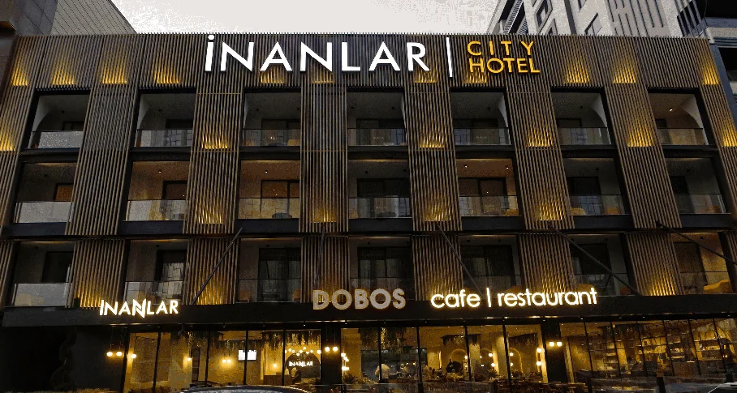
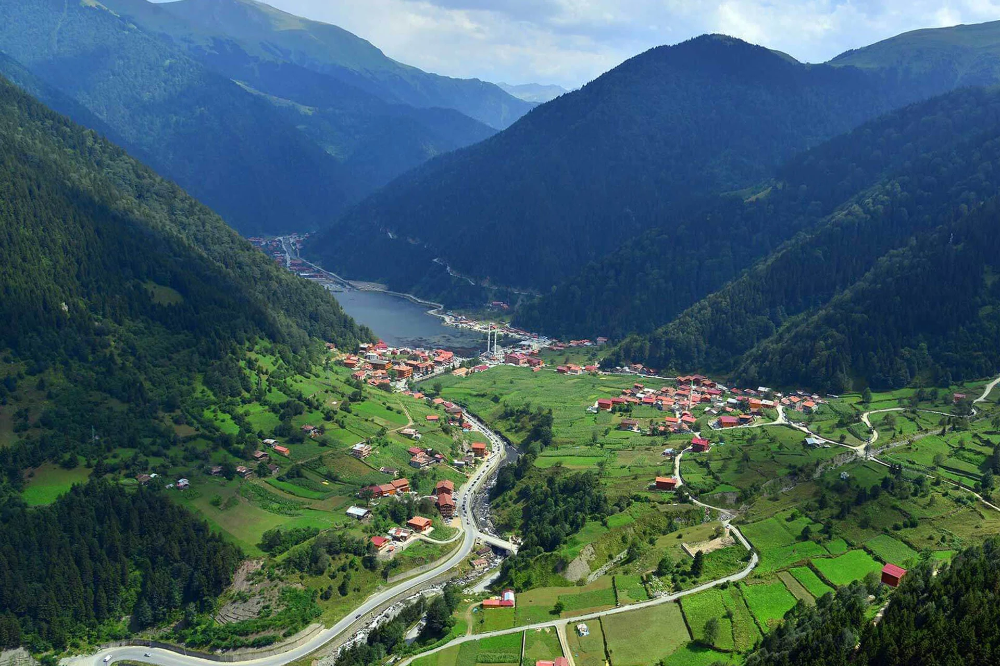
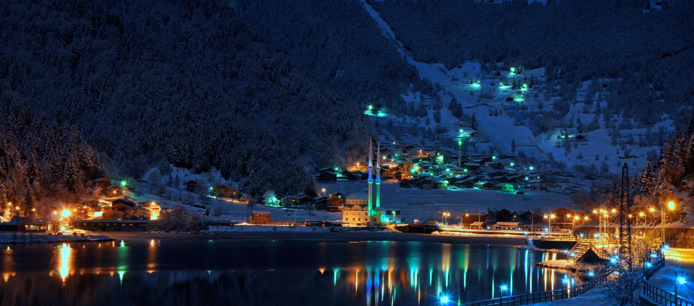
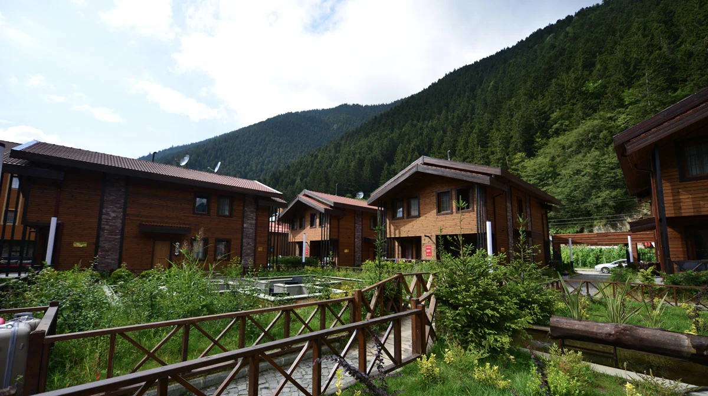
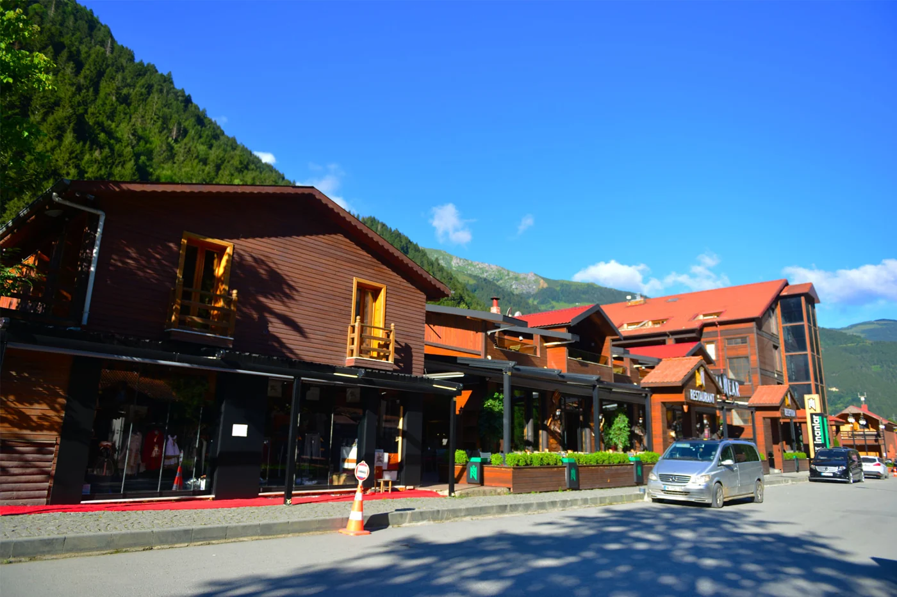
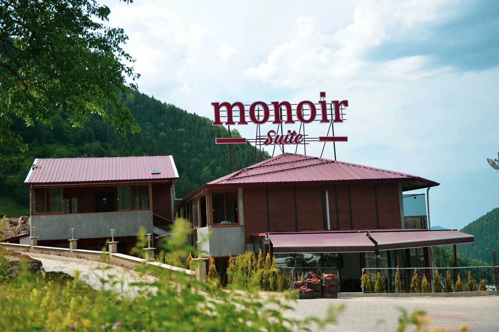
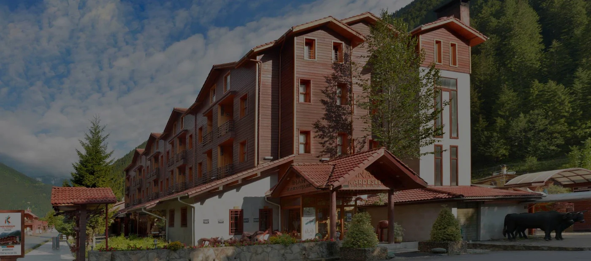

01Kaşüstü, Yomra / Trabzon
KÖKLERİ KARADENİZ’DE. BAKIŞI DÜNYADA.40°37′ N 40°17′ E
Bir aile hikâyesi.
Dünyaya açılan
bir bakış.
İnan ailesinin misafirperverlik birikiminden doğan, YABU Investments portföyündeki turizm markası.
Dünyamızı keşfedine↗
Hikâyemize doğru
UZUNGÖL · TRABZON · TÜRKİYEBizi biz yapan coğrafya.
01 / EXDIO’YU TANIYIN
Gittiğimiz her yere,
köklerimizi taşırız.
Bazı yolculuklar bir yerden değil, bir aile hikâyesinden başlar. Bizim hikâyemiz Karadeniz’in doğasında, Uzungöl’ün kültüründe ve misafire verilen değerde saklı.
Exdio Travel, bu birikimi turizm alanındaki bakışıyla buluşturur. YABU Investments çatısı altında; insana, bulunduğumuz yere ve kalıcı ilişkilere verdiğimiz değerle kendi hikâyemizi yazıyoruz.
YABU Investments’ı keşfedin (Yeni sekmede açılır)01
Aileden gelen
Ortak değerler, uzun vadeli bir bakış.
02
Yere ait
Karadeniz’e uzanan kökler ve yerel birikim.
03
İnsana yakın
Her ilişkinin merkezinde güven ve özen.

YEREL KÖKLER / ORTAK VİZYONBirlikte büyüyen bir hikâye.
02 / AİLEMİZ & VİZYONUMUZ
Aynı aile.
Yeni ufuklar.
Yavuz İnan’ın sahipliğindeki Exdio Travel, YABU Investments’ın turizm portföyünde yer alır. Ailemizin konaklamadan yeme içmeye, tasarımdan perakendeye uzanan dünyasının bir parçasıyız.
ŞİRKET SAHİBİ
Yavuz İnan
Exdio Travel · YABU Investments ailesi
03 / KONAKLAMA DÜNYAMIZ
Beş farklı adres.
Ortak bir karşılama.
Trabzon’un şehir ritminden Uzungöl’ün doğasına. İnan ailesinin ve YABU portföyünün konaklama markalarını yakından tanıyın.
5 tesis gösteriliyor

02Uzungöl / Trabzon
03Uzungöl / Trabzon
04Uzungöl / Trabzon
05Uzungöl / Trabzon04 / YABU DÜNYASI
Farklı alanlar.
Aynı özen.
Exdio Travel, tek başına bir isimden fazlası. YABU Investments’ın farklı sektörlerde bir araya gelen markalarıyla aynı aile vizyonunu paylaşır.
YABU’nun tüm markaları (Yeni sekmede açılır)01
Konaklama
İnanlar City · İnanlar Premium · İnanlar Deluxe · Monoir Suite
02
Yeme içme
Zeen Lounge Cafe · Zeen Premium · Dobos Lounge · Mucca
03
Tasarım & perakende
Yabu Design · Juno Marketplace
04
Turizm
Exdio Travel
05 / İLETİŞİM
Yeni hikâyeler,
bir merhabayla başlar.
Kurumsal iletişim ve iş birliği için bize ulaşın.
TÜRKİYE İLETİŞİM
Uzungöl, Fevzi Çakmak Caddesi No:3861960 Çaykara / Trabzon
TürkiyeHaritada görüntüle (Yeni sekmede açılır)